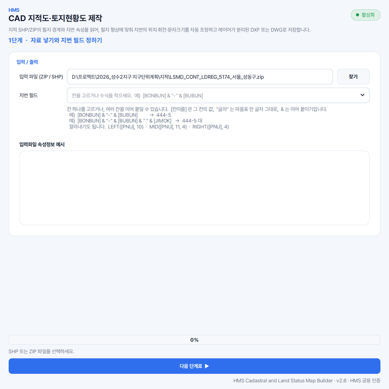
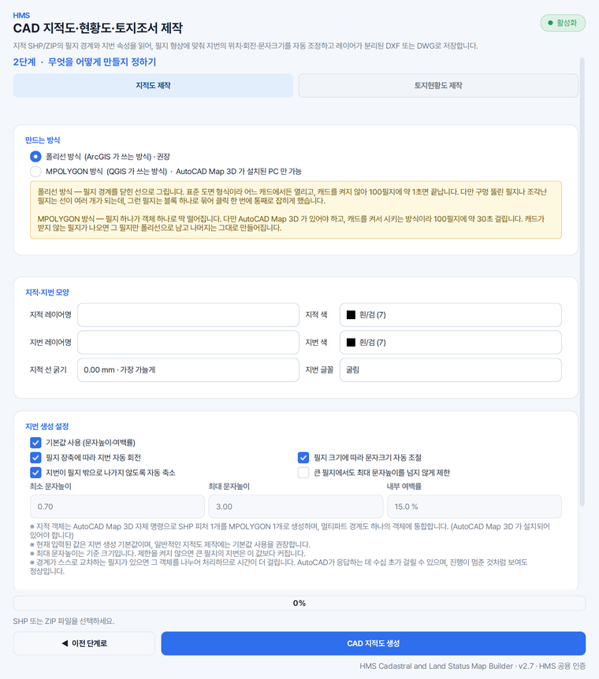
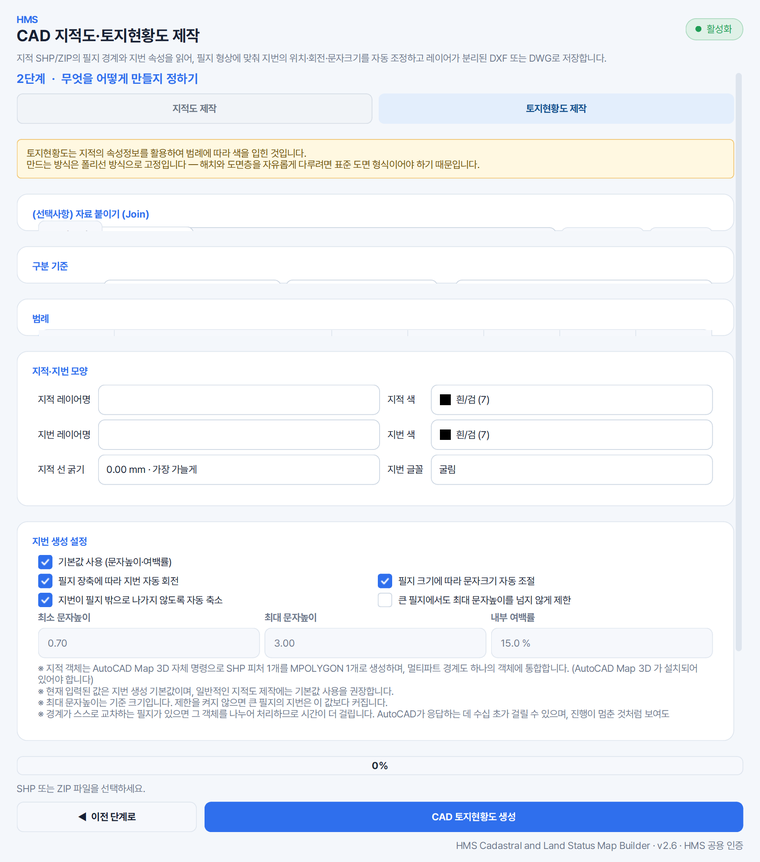

지적 자료를 캐드 도면으로 옮길 때
지번은 리습 없이 자동으로 입력됩니다. 필지의 모양과 기울기를 재어 그 안에 들어가는 크기로, 필지가 누운 방향에 맞춰 놓이므로 도면만 보고도 땅의 넓고 좁음을 가늠할 수 있습니다.
HMS 지적도는 필지 경계와 지번을 레이어로 나눠 그린 캐드 도면, 지목 · 소유별로 칠한 토지현황도, 편입면적까지 적은 토지조서를 한 창에서 만듭니다.
가지고 계신 지적 파일을 넣거나, 구역계나 편입토지조서 엑셀만 넣고 필지를 브이월드에서 받아 옵니다.
지적선과 지번은 ##지적 · ##지번 레이어로 나뉘어 캐드 도면층 목록 맨 위에 놓입니다.
지번은 리습 없이 자동으로 입력됩니다. 필지의 모양과 기울기를 재어 그 안에 들어가는 크기로, 필지가 누운 방향에 맞춰 놓이므로 도면만 보고도 땅의 넓고 좁음을 가늠할 수 있습니다.
구역계를 넣고 [브이월드에서 지적 공간정보 가져오기]를 누르시면 구역에 걸치는 연속지적도를 받아 입력 파일로 넣습니다. 캐드에서 선과 호를 이어 그린 구역계도 면으로 이어 읽습니다.
필지마다 PNU 로 지목 · 대장면적(공부면적) · 소유구분 · 개별공시지가 · 용도지역 · 이용상황을 받아 조서 양식의 엑셀로 정리합니다. 면적은 대장면적 · 구적면적 · 편입면적 · 보정면적 넷을 적습니다.
지목별 · 면적 구간별 · 소유별로 나누어 칠하고 범례까지 도면에 그려 넣습니다. 지목이 자료에 따로 없으면 지번 끝 글자에서 찾아내고, 대장에만 있는 값은 엑셀을 붙여 씁니다.
지적도 · 토지현황도 · 편입토지조서 가운데 하나 이상 고르시면, 고르신 것을 한 번에 만듭니다.
[내 지적 파일 넣기]로 SHP · ZIP 을 넣거나, 구역계나 편입토지조서 엑셀을 넣고 [브이월드에서 지적 공간정보 가져오기]를 누릅니다.
지번으로 쓸 칸을 고르고 속성 미리보기로 값을 확인합니다. 본번과 부번처럼 여러 칸을 수식으로 이어 붙이셔도 됩니다.
지적도는 만드는 방식을, 토지현황도는 구분 기준과 범례의 색 · 무늬 · 투명도를, 편입토지조서는 면적 보정 방법(몰아 · 비율 · 안 함)을 정합니다.
끝나면 걸린 시간과 성공 · 실패 개수를 알려 드리고, 만든 DXF 를 그 자리에서 열어 보실 수 있습니다.
HMS Cadastral and Land Status Map Builder converts Korean cadastral maps from SHP to DXF, placing each lot number inside its parcel, and can fetch the continuous cadastral map from VWorld when you only have a project boundary. It also draws land status maps colored by land category and builds a land acquisition schedule in Excel. It runs on Windows, and its screens are in Korean.
가상의 사업지(성수2지구 지구단위계획) 자료를 넣어 찍은 화면입니다. 예전 화면이라 단계 나눔과 단추 이름이 지금과 조금 다릅니다.



네. 지적 SHP 나 ZIP 을 넣으시면 필지 경계와 지번이 레이어로 나뉜 DXF 가 나옵니다. 기본인 폴리선 방식은 캐드를 띄우지 않고 바로 만들어 100필지에 약 1초, 10,000필지에 약 2분이 걸립니다.
만드는 방식에서 MPOLYGON 방식을 고르시면 필지 하나가 객체 하나로 만들어집니다. 이 방식은 AutoCAD Map 3D 가 있어야 하며 100필지에 약 30초가 걸립니다. 도면은 두 방식 모두 DXF 로 나오며, DWG 가 필요하시면 AutoCAD 에서 열어 다른 이름으로 저장하시면 됩니다.
네. 토지현황도의 구분 기준을 지목별로 고르시면 갈래마다 색을 달리 칠하고 범례까지 그린 도면이 나옵니다. 편입토지조서를 먼저 만드시면 이용상황 칸이 든 필지 SHP 도 생기므로, 그 파일을 붙여 이 칸으로 나누실 수도 있습니다.
소유자 성명은 공개 자료에 없어 소유구분까지만 채웁니다. 소유자처럼 도형에 없는 값은 가지고 계신 대장 엑셀을 붙여 색을 나누는 기준으로 쓰실 수 있습니다.
연속지적도는 도해 자료라 측량으로 정한 실제 경계와 다를 수 있고, 면적도 참고값입니다. 지방자치단체나 한국국토정보공사(LX)에서 받으신 지적 파일이 있으시면 그것을 넣으시는 편이 가장 정확합니다.
솔루션을 하나씩 받지 않습니다. Solution Center 를 한 번 설치하면 그 안에서 골라 설치합니다.
파이썬 같은 실행환경까지 함께 들어 있어, 쓰시는 컴퓨터에 따로 준비하실 것이 없습니다.
소속은 회사명 · 학교명 · 기관명을 정확히 적어 주셔야 승인됩니다.
내려받기부터 설치까지 한 번에 끝납니다. 새 버전이 나오면 카드가 알려 줍니다.
쓰시다가 막히면 화면을 캡처해 카카오톡 오픈채팅이나 메일로 보내 주세요. 오류 창이 떴다면 그 창까지 함께 담아 주시면 가장 빠릅니다. 문의하는 곳은 홈페이지 문의 칸에 모아 두었습니다.
모두 같은 Solution Center 안에서 골라 설치합니다.